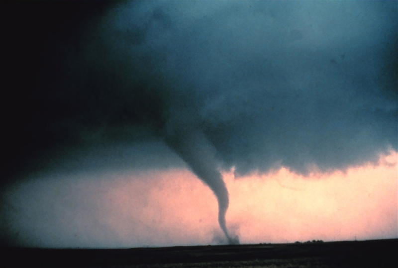

Environment
Researchers are seeing an increase in clusters of six or more tornadoes.
June 26, 2022
Tornado with dust and debris cloud forming in Oklahoma. (NOAA Photo Library)
Tornadoes are among the most violent natural disasters. Scientists believe that climate change could impact the conditions where tornadoes form and could lead to changes to when and where they occur in the United States.
Tornadoes form when warm, moist unstable air collides with cold, dry air. As the climate warms, these extreme weather events could become more likely and potentially more destructive.
A study published in the journal Science has described seeing fewer days with at least one tornado, but more days with a cluster of six or more. The number of days with six or more tornadoes was 202 in the 1950s.
Between 2010-2019, there were 574.
Roughly 1,200 tornadoes hit the United States every year.
Although reports of tornadoes have increased since the introduction of the Doppler radar system in the 1990s, the actual number of tornadoes has not.
When tornado counts prior to Doppler radar are adjusted by either accounting for unreported weak tornadoes or only looking at strong to violent tornadoes, the number of tornadoes has not changed substantially.
Most of the increase can be seen in the weakest category of tornadoes with wind speeds capable of uprooting trees, peeling off roofs and pushing cars off the road. In fact, there may even be a slight decline in the number of strong or violent tornadoes.
Prior to Doppler, tornado records relied on eyewitness accounts, which means if no one saw a tornado there would be no record of it. Some of the earliest tornado records from the 1950s are believed to be incomplete.
Recent data on tornadoes from the last three decades, while more reliable, is skewed due to improvements in the ability to detect small tornadoes and tornadoes that occur in sparsely populated areas.
Tornadoes have occurred in every state, including Hawaii and Alaska, according to the National Weather Service.
The number of tornadoes in Texas and Nebraska have fallen in the last two decades, while the number of tornadoes in Mississippi, Alabama, Arkansas, Missouri, Illinois, Indiana, Tennessee, and Kentucky have risen.
More than 20 states saw an increase in tornado activity when comparing data from the last two decades (2000-2019) to the two decades prior (1980-1999).